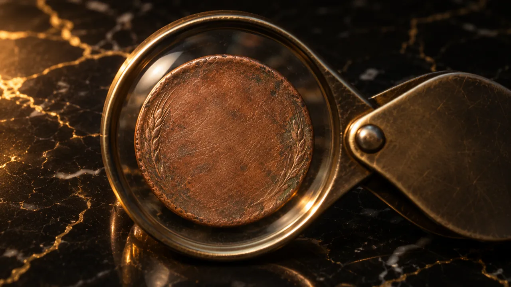

Featured
Errors and odditiesWhat is the Italian 2002 Mole one cent coin worth?
In 2013 Bolaffi put a used Italian Mole cent at around €1,500. The rare error has a 1 on the common side and the Mole tower on the national side.
Discover what makes your euro coins special, from rare issues to the change in your pocket.

Featured
Errors and odditiesIn 2013 Bolaffi put a used Italian Mole cent at around €1,500. The rare error has a 1 on the common side and the Mole tower on the national side.

Yes. An uncirculated Grace Kelly coin from 2007 in its case is valued at about €2,300 to €3,359. Monaco never officially put it into circulation.

Monaco’s Grace Kelly and fortress coins and the 2024 Cyprus commemorative are among the valuable examples. The prices apply to collector editions.